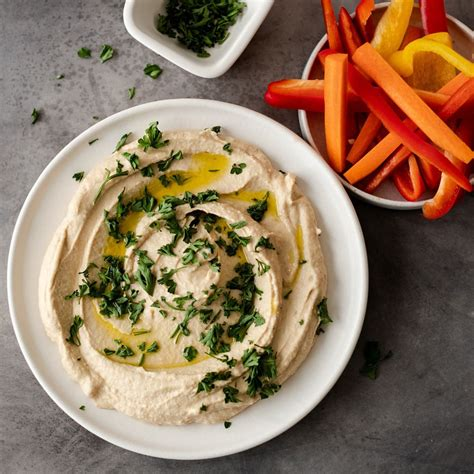

Hummus

A staple of many Mediterranean meals, hummus is
a paste made mainly of chickpeas, garlic and
olive oil. Often other ingredients are added
depending on region. This recipe is for a very
basic hummus.
Ingredients:
- 2 peeled cloves garlic
- 2 tablepoons olive oil
- 1 15oz can chickpeas
- 1 tablespoon sesame seeds
- Salt & pepper to taste
Let's cook! --
- Gather ingredients
-
Crush and chop the garlic.
-
In a medium saucepan over medum heat:
Add in olive oil and garlic. Cook for
approximately 3 minutes, until garlic is
tender. Set aside and allow to cool.
-
In a food processor:
Add chickpeas with about 1 tablespoon of
liquid from the can. Process till smooth.
Mix in the garlic and olive oil, sesame
seeds, salt & pepper. Blend till smooth, add
reserved liquid from chickpeas till desired
consistency. Chill in refrigerator until
serving.